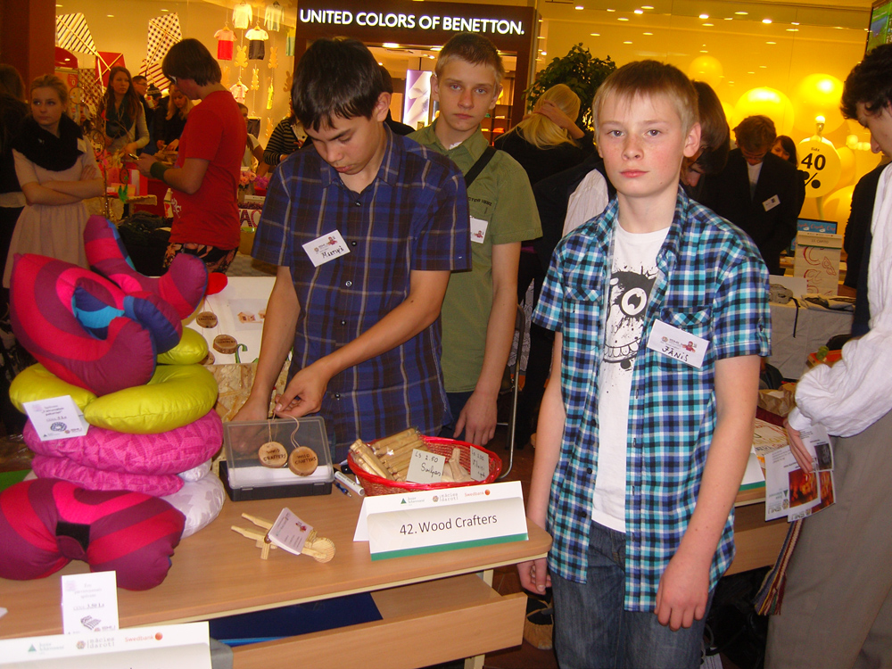
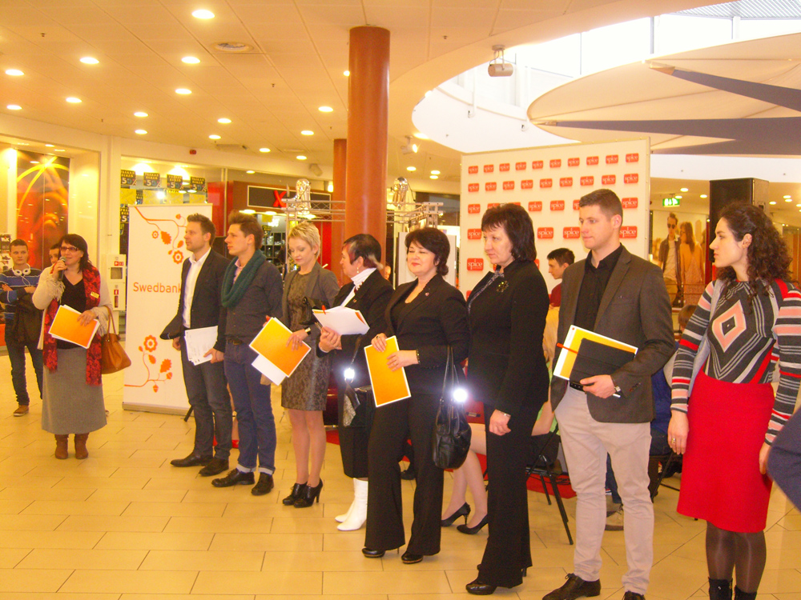
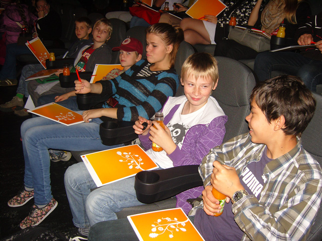
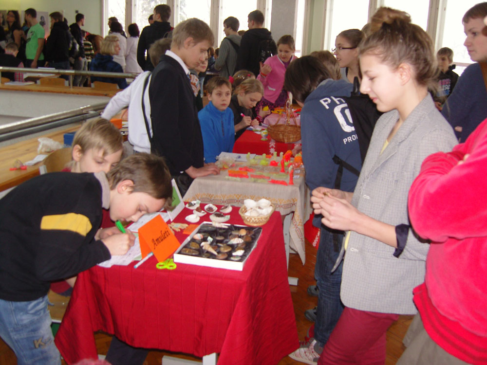
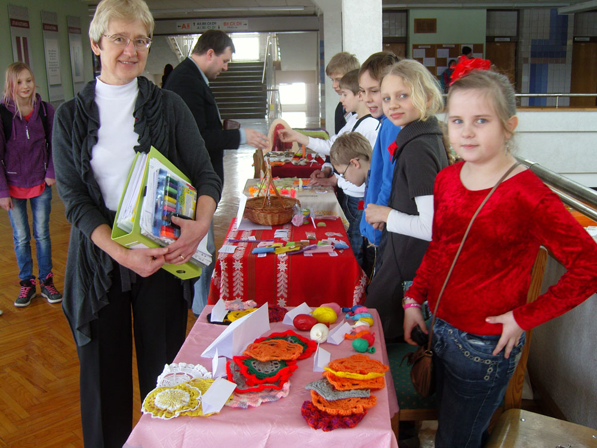
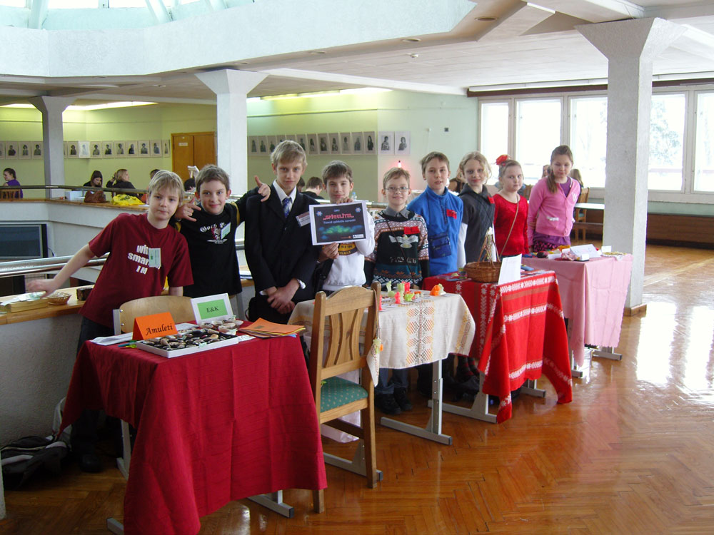
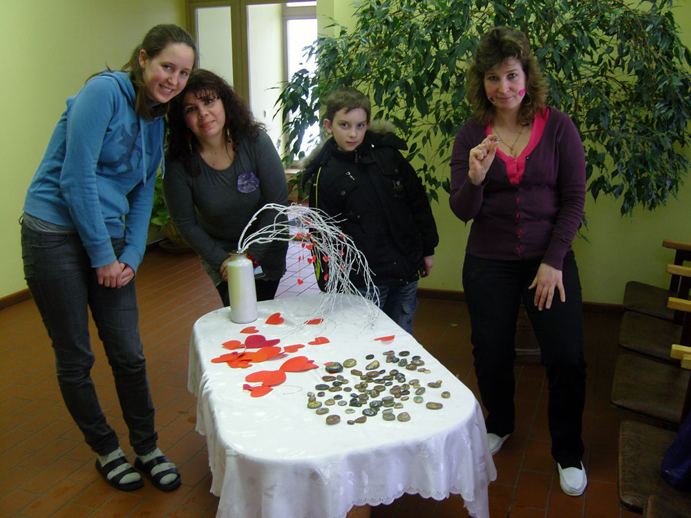
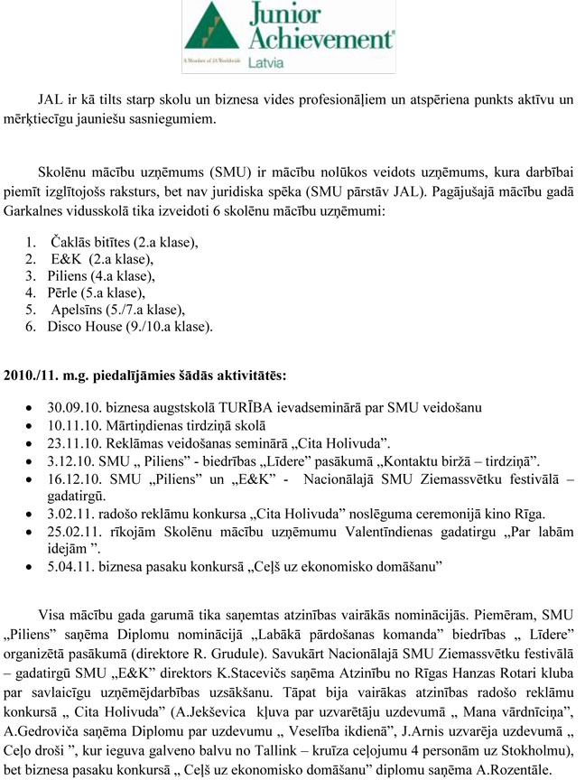

Junior Achivement
Sveicam konkursa “Biznesa pasakas 2022” finālisti – Keitiju Dauksti! Lepojamies!
2022-06-03

Garkalnes Mākslu un vispārizglītojošā pamatskola


2022-06-03
2022-02-03

JAL projekta koordinatore Garkalnes vidusskolā A. Strode
2013-04-19
No šā gada 9. marta līdz 11. martam Rīga Plaza norisinājās Starptautiskais Skolēnu mācību uzņēmumu festivāls, kurš bija pulcējis dalībniekus no 10 valstīm: Austrijas, Dānijas, Igaunijas, Lietuvas, Zviedrijas, Norvēģijas, Somijas, Nīderlandes, Turcijas un Latvijas. Kopā pavisam bija 77 Skolēnu mācību uzņēmumi, no kuriem par 2013. gada labāko tika atzīts Latvijas uzņēmums „ Dream Sleep ”, kurš ražo trīs veidu (dažādi pēc formas un pildījuma) spilvenus ceļošanai, kā arī tos var izmantot skatoties televizoru mājās.

JAL projekta koordinatore Garkalnes vidusskolā A. Strode
Foto galerija: Projekta Junior Achievement Latvia aktivitātes
Savukārt jau februārī bija izsludināts konkurss „Mana vārdnīciņa” sākumskolēniem. Taču piektdien, 5. aprīlī, tapa zināmi Junior Achievmenet – Young Enterprise Latvija sadarbībā ar Latvijas Banku organizētā konkursa „Mana vārdnīciņa” rezultāti. Laureātu vidū ir arī Garkalnes vidusskolas 1.a klases skolniece Evelīna Krūmiņa. No sirds apsveicam!
Kopā konkursam tika iesniegts 151 darbs, no kuriem 14 darbi tika atzīti par labākajiem un to autori kopā ar skolotāju, vecākiem un vecvecākiem tika aicināti uz apbalvošanas ceremoniju Latvijas Bankā (Kr. Valdemāra ielā 2a) 19. aprīlī. Konkursa uzdevums bija sagatavot ekonomisko terminu vārdnīcu, kur katru terminu izskaidrotu 3 dažādas paaudzes, piemēram, skolēns, skolēna mamma vai tētis, kā arī kāds no vecvecākiem. Konkursa žūrija, kuras sastāvā bija Latvijas Bankas pārstāvji, bija pārsteigti par bērnu izdomu un loģiskajiem spriedumiem. Pasākuma gaitā bija iespēja apskatīt multimediālu izstādi Latvijas Bankā „20 nacionālās valūtas mākslas gadi”, kuru vēl ir iespējams apmeklēt līdz 28. aprīlim. Savukārt skolēniem bija iespēja uzzīmēt savu Ls 1 monētu. Arī Evelīna izpaudās ar savu radošo pieeju.
JAL projekta koordinatore Garkalnes vidusskolā A. Strode
2012-02-11

Kopā ar 60 citiem Latvijas Skolēnu mācību uzņēmumiem Wood Crafters (uzņēmumā darbojas 6.a klases skolēni Jānis Balodis, Mārtiņš Kozlovskis, Arnolds Rudzeišs) startēja Valentīndienas tirdziņā t/c Spicē, kuru Rīgas reģionam organizēja Junior Achievement Latvia, ar Jolantu Lankovsku - ekonomikas skolotāju Privātajā vidusskolā "Klasika" un Rīgas Mūzikas internātvidusskolā, projekta "Inovatīva un praksē balstīta pedagogu izglītības ieguve un mentoru profesionālā pilnveide" vadītāju un pasniedzēju LU priekšgalā.
Tirdziņā bija izveidotas trīs ielas – Zaļā, Mīļlietiņu un Knifu iela. Tā kā mūsu uzņēmums ražo dabai draudzīgus produktus – koka izstrādājumus – svilpītes, vilciņus un medaļas, tad mūs varēja atrast Zaļajā ielā.
Zēni uz tirgu bija sagatavojuši sava uzņēmuma reklāmu, un ieinteresētiem cilvēkiem izdalīja vizītkartes, tādējādi popularizējot savu uzņēmumu sabiedrībā. Jāteic, ka rast noietu savai precei nav nemaz tik vienkārši, tāpēc jādomā ar vien ko jaunu, lai uzrunātu pircēju.
Kopumā gaisotne tirdziņā bija pozitīva, neskatoties uz bargo žūriju, kura 9 cilvēku sastāvā uzdeva āķīgus jautājumus, jo mūs visus iepriecināja Mūzikas internātvidusskolas grupa "Cepums".
Valentīndienas tirdziņa noslēgumā visi Skolēnu mācību uzņēmumi tika pie balvām, kuras sponsorēja Rīgas Dome. Ir jābūt aktīviem un strādāt gribošiem, tad arī rezultāts neizpaliks.
Aicinot uz sadarbību, JAL projekta koordinatore A. Strode
2012-10-22
JAL programmas ietvaros šajā mācību gadā 19. septembrī mūsu skolas skolēniem bija iespēja apmeklēt Inovācijas busiņu, kur par piedāvāto ir plašs Garkalnes vidusskolas matemātikas un fizikas skolotājas I. Sineles raksts (Garkalnes Novada Vēstis Nr.122, oktobris, 2012).
Savukārt, 16. oktobrī 9 Garkalnes vidusskolas skolēni (E. Veide, J. Balodis, M. Kozlovskis, A. Jekševica, A. Gedroviča, A. Grigorjeva, J. A. Siņickis, V. Indriksons, G. Avens) piedalījās Skolēnu mācību uzņēmumu ievadseminārā Rīgā, Multikino, T/C Rīga Plaza, kur stāstīja skolēniem par Skolēnu mācību uzņēmumu nozīmi karjeras veidošanā, kā arī iepazīstināja ar mārketinga un radošo konkursu „Cita Holivuda”.
Seminārā bija iespēja tikties ar Eco Catering vadītāju R. Frīdenbergu – Kalniņu, kuru varam uzskatīt kā labās prakses piemēru veiksmīgas uzņēmējdarbības uzsākšanai Latvijā, kā arī savā pieredzē un pētījumos dalījās Reklāmas un sociālo mediju speciālists J. Polis no „draugiem.lv”, žurnāla „Ir” reklāmas speciālists V. Dūdums un citi.
Interesanti bija vērot JA – YE Latvija 2012. gada uzvarētāju un Eiropas dalībnieku SMU „Easy Do”, kuri ražo sen zināmu un novērtētu preci mājsaimniecībā – priekšautu, tikai uzlabotā versijā. No tā varam secināt, ka ne vienmēr ir „riteni jāizgudro no jauna”, bet pievienotai vērtībai gan ir liela nozīme. Cerams, ka arī mūsu skolēni ir iedvesmojušies no seminārā redzētā un dzirdētā, un tagad tik jāķeras pie savu uzņēmumu dibināšanas!
JAL projekta koordinatore Garkalnes vidusskolā A. Strode
14. februārī Garkalnes vidusskolas Skolēnu mācību uzņēmumi „Spīgulītis”, „E&K”, „Kamols” un „Kastanis” devās uz Valentīndienas tirdziņu Ādažu vidusskolā, lai piedāvātu savu preci kopā ar Ādažu skolēniem. Tā bija kārtīga pieredzes apmaiņa, jo Ādažos uzņēmumus dibina vidusskolēni, bet mums, kā zināms, šogad savu roku uzņēmējdarbībā vairāk iemēģina no 3. līdz 5. klasei!
Tāpat neizpalika arī jaukās Sirsniņdienas emocijas!
Atbraukuši no tirdziņa Ādažos, SMU „E&K” vēl piedāvāja savus Laimes akmentiņus PII „Skudriņas”, jo darbinieki bija izteikuši vēlmi iegādāties šī uzņēmuma produkciju.
Paldies par atbalstu!
JAL projekta koordinatore A. Strode
Baudiet tirdziņa atmosfēru!
Arī Ādažu skolas direktore ieinteresēta par garkalniešu piedāvājumu.
Garkalnes vidusskolas SMU komanda.
Tāpat austriete Laura nav divreiz jāmudina uz ekoloģiskās preces iegādi PII "Skudriņas".
